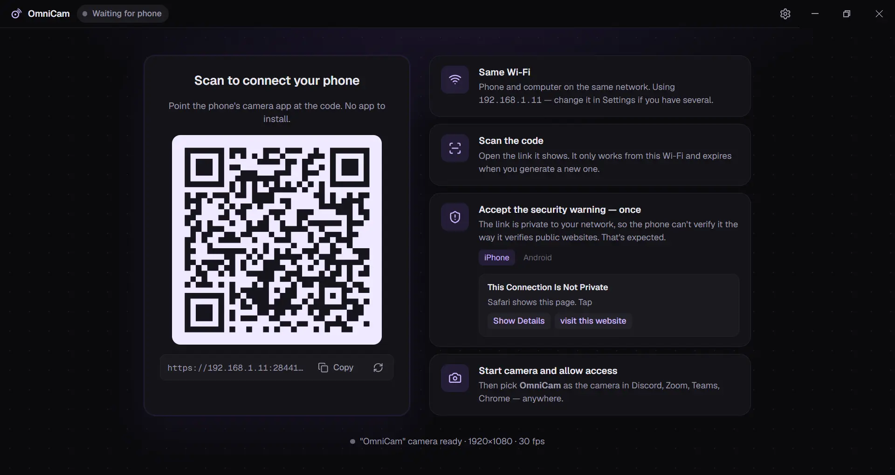
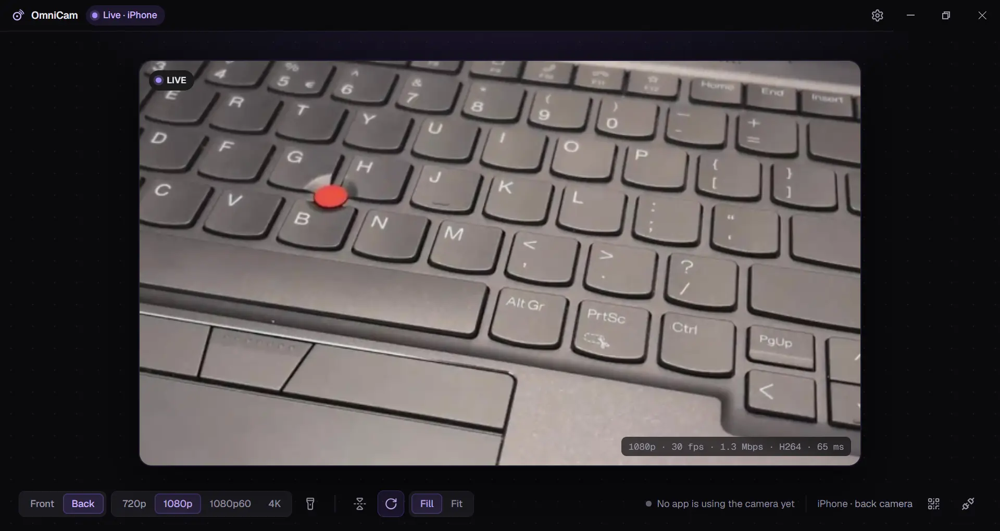
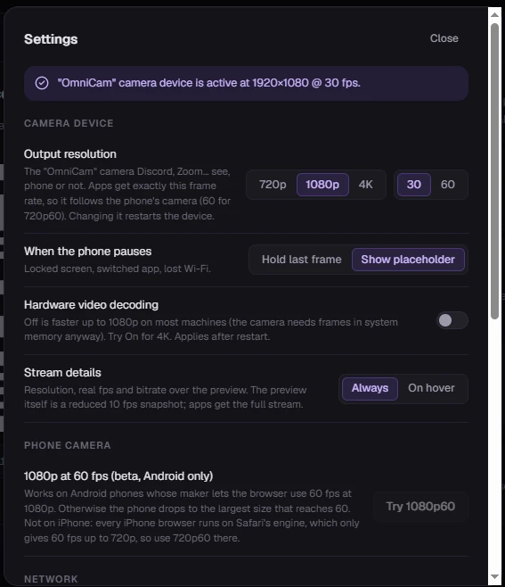
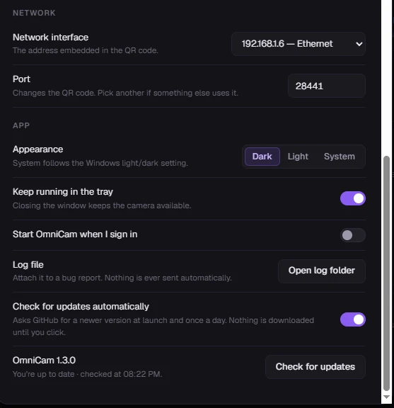
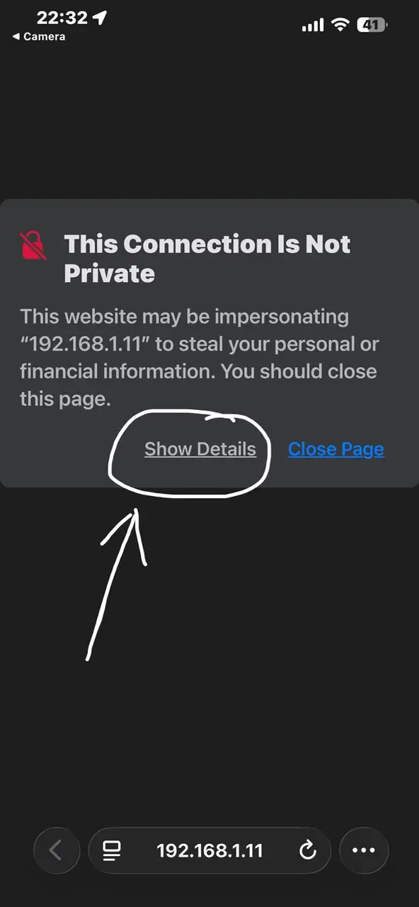
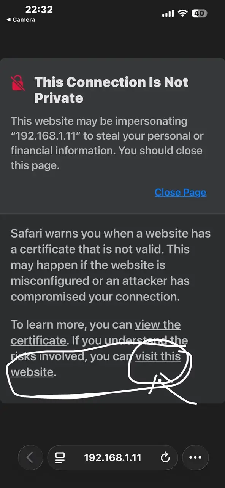
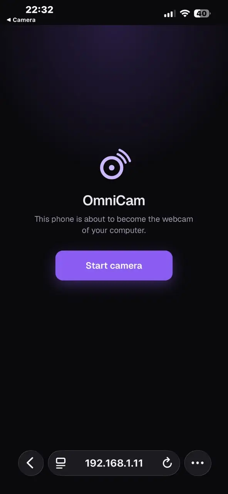
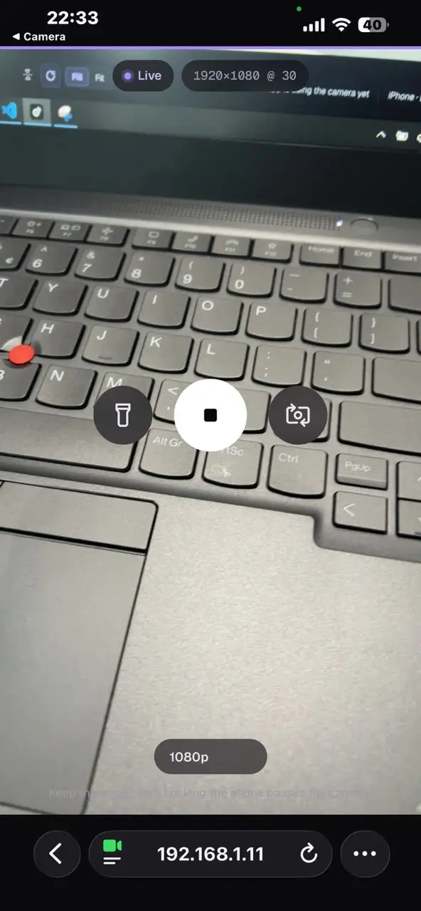

Free · open source · Windows 10 / 11
Your phone is the webcam.
Nothing to install on it.
Scan a QR code, tap Start camera, and a camera named OmniCam shows up in Discord, Zoom, Google Meet, Chrome and OBS. Video goes from your phone to your PC over your own Wi-Fi. No account, no cloud.
Every installer built by public CI from tagged source · code scanned by CodeQL · zero telemetry · MIT
01 — Setup
Three steps, about thirty seconds, once
-
1
Install and open OmniCam
The installer registers the OmniCam camera on your PC. The window shows a QR code.
-
2
Scan it with your phone
Same Wi-Fi as the PC. iPhone (Safari) or Android (Chrome). The first time, the browser shows a certificate warning. Why, and what to tap.
-
3
Pick "OmniCam" in your app
Discord, Zoom, Google Meet, Teams (classic), Chrome, Firefox, OBS, Slack: any app that lists webcams.


02 — Features
What you get
Up to 4K from the phone
720p, 720p60, 1080p or 4K capture, encoded by the phone's hardware H.264 encoder.
Front, back, torch
Switch cameras, toggle the flashlight, mirror, rotate, Fill or Fit, from the PC or the phone.
Out of the way
Runs from the tray; closing the window keeps the camera live. About a quarter of a CPU core at 1080p.
Stays on your network
Peer-to-peer WebRTC over your Wi-Fi. No relay servers, nothing uploaded anywhere.
Free and open
MIT licensed. Read every line on GitHub, build it yourself, or send a fix.
Saves the phone's battery when idle
Drops to 5 fps when no app is using the camera and the window is hidden.
03 — Settings
Settings you'll actually use
Output resolution (up to 4K) for your apps, what to show when the phone pauses, which network the QR code uses, light or dark, start with Windows, and whether to check for updates. The frame rate follows the phone on its own. Nothing else to configure.


04 — Trust
Security and privacy, plainly
OmniCam asks for administrator rights and opens a port on your network. Here is exactly what it does with them.
What the installer changes
- Registers the OmniCam camera device (a DirectShow filter, 64- and 32-bit).
- Adds one Windows Firewall rule so your phone can reach OmniCam on your local network.
Both are listed on the installer's first page and removed when you uninstall. Nothing else runs as administrator.
What goes over the network
- Phone ↔ PC on your local network: the pairing page and the encrypted video.
- PC → GitHub: a daily update check you can turn off in Settings.
No account, no telemetry, no analytics, no crash reports. Privacy details
Where the installer comes from
Every installer is built by the project's public GitHub Actions workflow from the tagged source, and published on GitHub Releases. This site links there; it hosts no downloads of its own.
Code signing
Releases are moving to free code signing provided by SignPath.io, certificate by SignPath Foundation, so Windows shows a verified publisher. Until that is in place, Windows SmartScreen asks you to confirm: More info → Run anyway.
05 — First run
About the warning on your phone
Browsers only allow camera access over HTTPS. A certificate for a private address like
192.168.1.11 can't come from a public authority, so OmniCam creates its own on your PC, and the
phone's browser warns about it the first time.
Your phone is talking directly to your PC. Accepting it applies to that address on that network only, and you only do it once per phone and network.
iPhone: tap Show Details, then visit this website at the bottom.
Android: tap Advanced, then Proceed to 192.168…

Tap Show Details
Tap visit this website
Tap Start camera
You're live
06 — Limits
What it doesn't do yet
- No microphone. Video only; your usual mic keeps working.
- Windows only. macOS and Linux are on the roadmap.
- DirectShow apps only. The Windows Camera app and the new Microsoft Teams won't list it yet.
- One phone at a time, and the page must stay open with the screen on, so long calls want a charger.
- No USB. Wi-Fi, or a phone hotspot with the PC on it.
Is it really free?
Yes. MIT license, no paid tier, no account, no ads. If it helps you, a star on GitHub or a bug report is the best thanks.
The phone can't open the page
Phone and PC must be on the same Wi-Fi, not a guest network or mobile data. Some routers isolate Wi-Fi devices from each other; use another network or a phone hotspot. With VPNs or virtual adapters, pick your Wi-Fi under Settings → Network interface.
"OmniCam" doesn't show up in my app
Restart the app; apps list cameras when they start. If it's still missing, run the installer again to re-register the camera.
Does any video go through the internet?
No. Video goes peer-to-peer from your phone to your PC on your local network. There are no relay servers.
How was it built?
By one developer, with AI assistance for parts of the implementation, documentation and testing. The README says where it helped and where it didn't, and the architecture notes explain every design decision.